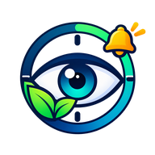

EyePause
20 : 20 : 20
Install
FOCUS TIME
20:00
২০ মিনিট কাজের পর চোখকে বিরতি দাও।
Start
Pause
Reset
এখনই বিরতি নাও
Settings
কাজের সময় (মিনিট)
বিরতির সময় (সেকেন্ড)
সাউন্ড চালু
নিজের সাউন্ড (WAV/MP3)
Preview sound
Default sound
Notification চালু করুন
Settings এই ব্রাউজারে সংরক্ষিত থাকবে।